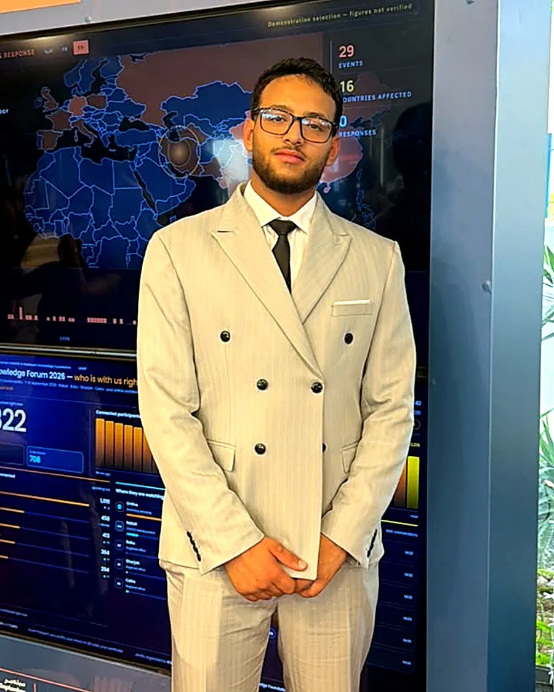

Front-End Development
Création de pages web et d'interfaces adaptées aux différents écrans.
Pratique en coursPassionné par le développement web et la création d'applications, je développe mes compétences à travers des projets pratiques et personnels. Je souhaite aujourd'hui intégrer une équipe dans le cadre d'un stage afin de mettre en pratique mes connaissances, découvrir le monde professionnel et continuer à progresser.

Mon parcours, mes objectifs et ma passion pour l'informatique.
Je suis étudiant en première année de BTS DAI (Développement des Applications Informatiques). Je m'intéresse particulièrement au développement web, à la programmation et à la conception d'applications. Je travaille avec plusieurs technologies, notamment HTML, CSS, JavaScript et PHP, tout en découvrant progressivement le développement côté serveur et la gestion des bases de données. À travers mes projets personnels, je cherche à renforcer ma logique de programmation, ma créativité et ma capacité à résoudre des problèmes. Mon objectif est de développer mes compétences et d'acquérir une première expérience professionnelle dans le domaine informatique.
Discutons ensemble →Les technologies que j'utilise et que je découvre progressivement.
Création de pages web et d'interfaces adaptées aux différents écrans.
Pratique en coursDécouverte de la programmation côté serveur et de la logique des applications.
En apprentissageDécouverte de la gestion et de l'organisation des données dans une application.
En apprentissageCréation d'interfaces modernes, structurées et faciles à utiliser.
Pratique en coursUtilisation des outils nécessaires à la création et à la gestion de projets.
En pratiqueApprentissage de la logique algorithmique et de la résolution de problèmes.
En apprentissageMon environnement de développement actuel.
Découvrez quelques projets personnels et travaux réalisés pour développer mes compétences.
Restaurant Reservation Platform
Développement d'un site web pour un restaurant avec un système de réservation en ligne, une interface d'administration et une gestion des réservations.
Modern Business Website
Concept de site web pour un salon de coiffure, avec une présentation moderne et une interface adaptée aux appareils mobiles.
Concept personnelInteractive Experience
Concept d'un musée numérique permettant de découvrir des contenus culturels à travers une expérience web interactive.
Concept personnelLes domaines étudiés et les compétences développées pendant ma formation.
Apprentissage de HTML, CSS et création de pages web.
Étude de la logique de programmation et résolution de problèmes.
Développement des bases de la programmation et découverte de différents langages.
Les domaines dans lesquels je souhaite continuer à progresser.
Création de sites web modernes et adaptés aux besoins des utilisateurs.
Découverte du développement d'applications et de leurs fonctionnalités.
Apprentissage de la gestion des bases de données et des informations.
Mon parcours académique actuel.
Développement des Applications Informatiques
Première année
Marrakech, Maroc
Les projets personnels et académiques qui me permettent de mettre en pratique mes connaissances.
Réalisation de projets pratiques, notamment Maison Royale, afin de développer mes compétences en développement web, en programmation et en gestion de bases de données.
Projets personnelsJe souhaite intégrer une structure professionnelle dans le cadre d'un stage afin de découvrir les méthodes de travail en équipe, contribuer à des projets concrets et approfondir mes compétences en informatique.
Vous avez une opportunité de stage, une question ou un projet ? N'hésitez pas à me contacter.
Marrakech, Maroc
azzdineben07@gmail.com